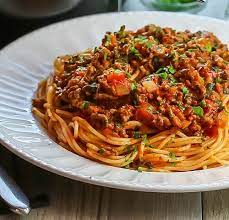

Spaghetti Bolognese

Description:
My childhood favourite! Heck, I am still lovin' it!
Can be done with different additional veggies, such as carrots, bell peppers, etc.
Personally, I prefer pure ground beef for this one.
Ingredients:
- 1 kilo ground beef
- 5 to 6 big onions
- 1 or 2 carrots
- 2 cans of sliced tomatoes or tomato sauce
- different veggies to taste (bell peppers, parsley,...)
- one 500 gr pack of pasta (whatever pasta type you have/like)
- different spices to taste (sweet paprika, black pepper, salt)
Steps:
- Finely clean and chop the onions and garlic if you will add some.
- Clean and finely chop the carrots and other veggies.
- You can also finely chop few slices of smoked bacon for extra taste.
- Start frying the onion, after a few minutes add garlic.
- Stir and add carrots and put half a cup of warm water over it.
- Keep on reducing it, and after 10 minutes add ground meat and keep on stirring.
- Once the meat is almost ready, add the tomato sauce.
In the meantime, Put the salted water to boil for pasta.
- Spice up the Bolognese sauce according to your taste.
- Reduce the sauce for 20ish minutes and add sugar to reduce tomatoes' acidity.
- Cook the pasta al dente and it is ready.
- Enjoy!